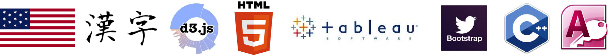

We may not get always get what we want, but we will always become what we want
Hello !Hola¡ 你好
My name is Fu Yu and this is my website.
I'm currently a year 4 student studying in Singapore Management University. I love travel and food. I used to work and travel in the United States Yellowstone National Park for four months and I had a fascinating time there.
I love fruit and I will use two fruits to describe myself:
Pomegranate: Thirst for Learning
I take myself as pomegranate because it does not only have an unpretentious look, but also a rich inside. I told myself, pomegranate is powerful because of thousands of seeds inside. If I want to be a powerful woman, I have to enrich myself with skills, knowledge and personality. So in these years, I kept learning new things, picking up new skills and exploring new world. I have the curious for unknown things and I'll keep on going.
Lemon: Cheerful & Energetic
Lemon is a cheerful fruit that every time I saw a lemon I would smile. I am also a cheerful person who like to laugh. I like to share interesting stories and my experience with my friends and I like to meet different people to know their own stories. I also likes to play sports.
My goal for this New Year is to get up early and keep on jogging in the morning!
 Competencies
Competencies
Efficient bilingual in English and Mandarin, basic in Cantonese
Proficient in Jave, Twitter Bootstrap, Laravel Framework, PHP, Javascript, JSP, MySQL, C++, d3.js, and HTML.
Well-versed in Tableau, IBM Business Process Modeling, SharePoint, Bloomberg Terminal, Visual Studio 2010, Access Database and Microsoft Office

Something interesting about me!
1. My name "Fu Yu" sounds the same as "rich" in Chinese but it means "giving out help to others"
2. I just started to learn programming three years ago and I have finished several projects for different companies. I quite enjoy it :-)
3. I once hiked three kilometers in the Grand Canyon with my friends and we were almost attached by a bison in 2012, ahhhhh
4. I always bury my teeth under the grand of my house when I was young
5. I used to have two gold fishes, one rabbit, one turtle and eleven silkworms